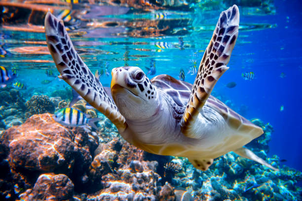

Threats from Commercial Longline Fisheries
The Problem: : Each year, sea turtles are accidentally captured, injured or killed by fishermen. Many of these injuries and deaths take place while turtles are migrating through fishing areas. The turtles, attracted to the bait, get caught on the hooks used to catch fish. A long line is a huge fishing line that can have thousands of hooks and lures and can stretch for several miles behind boats. Many of the fish that are being sought after live in the same areas as turtles. When a turtle is caught unintentionally the hook can kill them because it could prevent them from getting to the surface to get air. Furthermore, if they don’t die from drowning, the hook can be permanently debilitating because it can get lodged in their digestive systems and eventually cause a much slower death. As it stands, the global fishing fleet is currently 2.5 times larger than what oceans can sustainably support, which shows how big a threat commercial fishing practices pose to turtles. One study stated every year longliners set more than one billion baited hooks, clearly a practice that threatens the survival of sea turtles.
Recently, the National Oceanic and Atmospheric Administration’s Fisheries Service (NMFS) announced an emergency rule to protect threatened sea turtles in the Gulf of Mexico. The temporary rule, which took effect on May 18, will require the commercial reef fish longline fleet to fish seaward of a line approximating the 50-fathom contour in the Gulf of Mexico. Current regulations require this fleet to fish seaward of 20-fathoms. The ban comes after a NMFS report estimated that as many as 1,000 sea turtles were caught in the fishery over an 18 month period.
Species Affected: All sea turtles are affected by commercial fisheries. Loggerheads and leatherbacks have the greatest risk because of their feeding habitats.
The Solution:
- Make sure that the fish you buy from your local grocery store are caught by these turtle-friendly fisheries;
- Inform and encourage family and friends to purchase seafood from responsible fisheries;
- Relocating eggs to hatcheries (only in areas where no other soluntion will work);
- Petition the government to continually inspect fishing vessels to ensure they are following the protection laws.